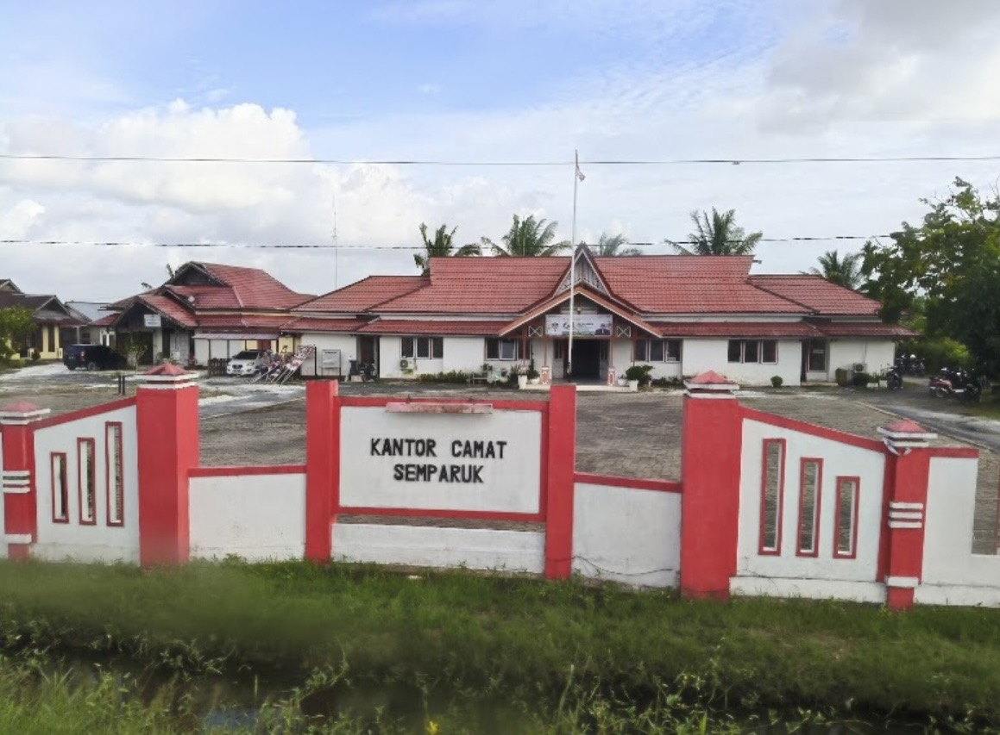

Galeri Desa Semparuk

Aktivitas Sektor Pertanian & Perkebunan

Rapat & Musyawarah Bersama Warga

Keindahan & Suasana Asri Wilayah Desa
Pusat informasi publik, transparansi pemerintahan desa, serta gerbang digital untuk mengenal lebih dekat potensi dan kebudayaan masyarakat Desa Semparuk.
Jelajahi DesaDesa Semparuk merupakan salah satu desa yang berada di wilayah Kecamatan Semparuk, Kabupaten Sambas, Provinsi Kalimantan Barat. Wilayah ini memiliki karakteristik pedesaan yang dinamis, memadukan kehidupan agraris dengan aktivitas perdagangan lokal yang terus berkembang pesat.
Secara administratif, wilayah kecamatan dan desa di kawasan ini memiliki sejarah perkembangan yang erat dengan pemekaran wilayah Kabupaten Sambas. Masyarakat Desa Semparuk dikenal sangat menjunjung tinggi nilai-nilai kebersamaan, adat istiadat, serta kerukunan antarwarga.
Pemerintahan Desa Semparuk berkomitmen untuk mewujudkan tata kelola pemerintahan yang transparan, akuntabel, serta memberikan pelayanan prima kepada seluruh warga demi tercapainya kesejahteraan bersama.
Visi:
"Terwujudnya Desa Semparuk yang Mandiri, Maju, Sejahtera, dan Berbudaya Berlandaskan Semangat Gotong Royong."
Misi:
Sebagian besar mata pencaharian warga bertumpu pada sektor pertanian dan perkebunan produktif yang menjadi roda penggerak utama perekonomian lokal.
Pertumbuhan sektor perdagangan skala kecil dan menengah (UMKM) terus didukung penuh oleh pemerintah desa guna meningkatkan pendapatan keluarga warga.
Kekuatan tradisi gotong royong dan keaktifan lembaga kemasyarakatan desa menjadi fondasi utama dalam menjaga keamanan serta keharmonisan lingkungan.

Jiwa Penduduk
Rukun Warga (RW)
Rukun Tetangga (RT)
Komitmen Pelayanan Publik
Kantor Kepala Desa Semparuk
Kecamatan Semparuk, Kabupaten Sambas, Provinsi Kalimantan Barat
Email: layanan@desasemparuk.id | Telepon: (0562) 123456
Jam Operasional: Senin - Jumat (08.00 - 15.00 WIB)